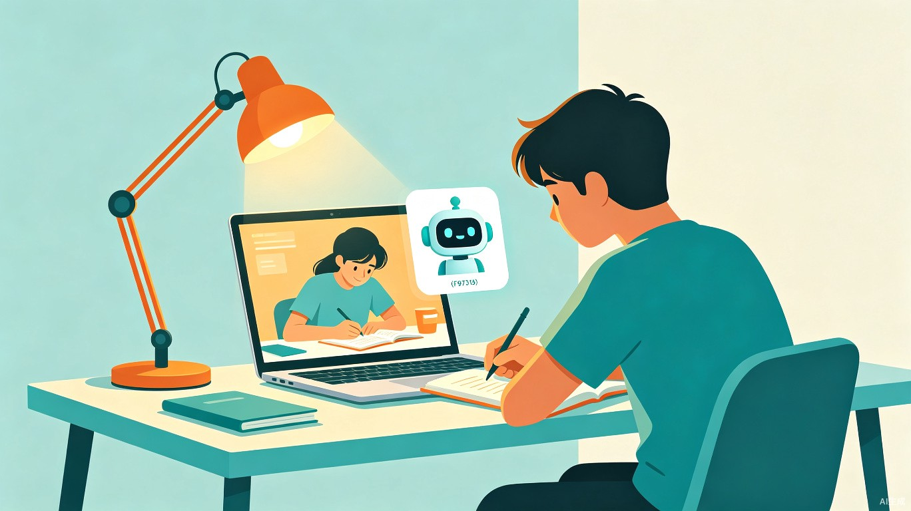
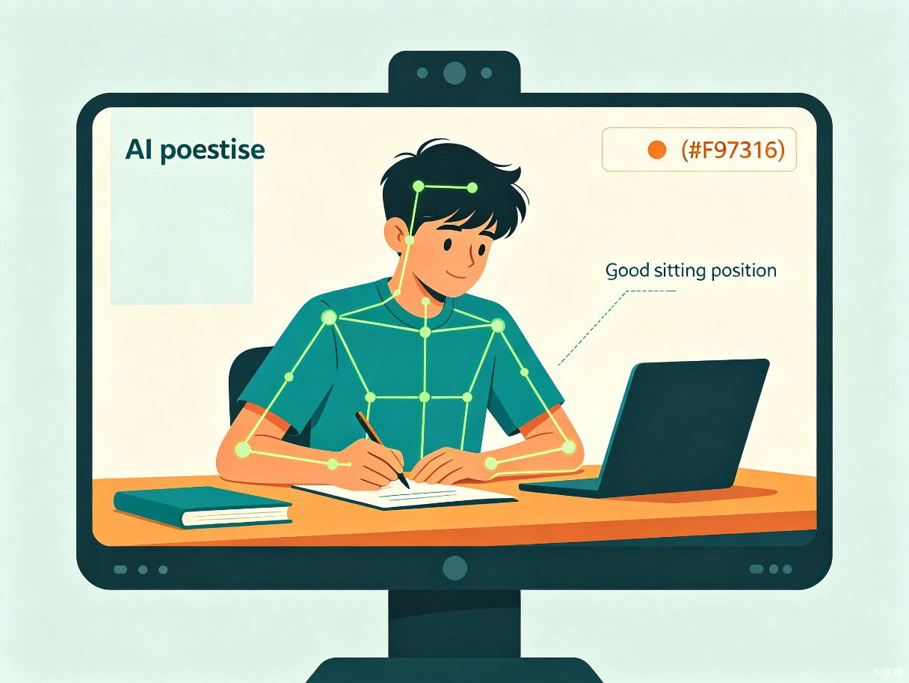
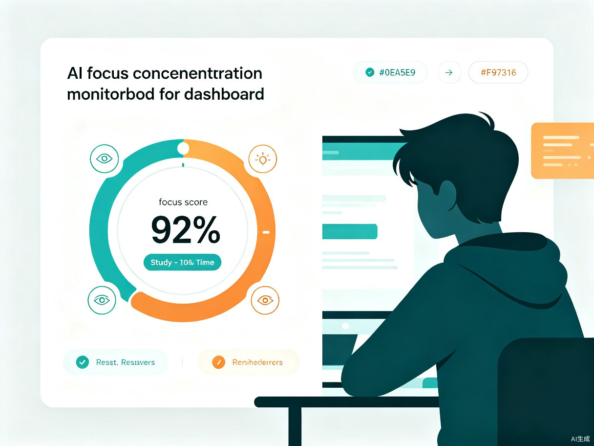
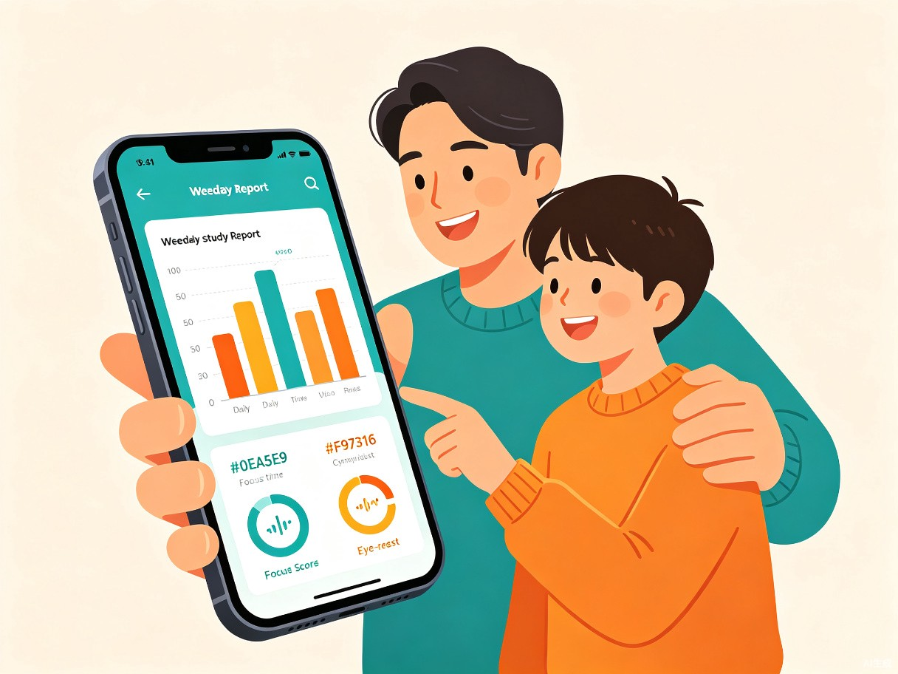

AI 驱动的青少年学习专注力守护系统 — 让每一次学习都被温柔看见
中国有 1.8 亿中小学生，每天平均学习 8-12 小时。然而，长期不良坐姿导致的脊柱侧弯、近视低龄化、注意力涣散等问题日益严重。家长想管却不在身边，学生自己意识不到，传统工具只会冷冰冰地计时。
超过 70% 的青少年存在含胸驼背、趴桌学习的问题，脊柱侧弯发病率逐年上升。
青少年近视率已超 80%，长时间无间断用眼是主因，20-20-20 法则几乎无人遵守。
频繁分心刷手机、走神发呆，有效学习时间仅占总时间的 40%-60%，严重影响学习效率。
一款通过 摄像头 + AI 实时感知 的青少年学习守护 Web 应用。打开浏览器即开始守护，通过 AI 姿态估计、专注度分析和智能提醒，为青少年构建一个「看得见健康、被温柔提醒」的学习环境。

通过摄像头实时捕捉学习者的骨骼关键点，智能判断坐姿是否标准。不是冷冰冰的"纠正"，而是用温暖的提醒引导自我调整。

通过面部朝向、眨眼频率、视线方向综合评估学习专注状态，区分"认真思考"和"走神发呆"，提供个性化的专注力报告。

自动执行 20-20-20 护眼法则，每 20 分钟提醒休息 20 秒，远眺 20 英尺（6 米）外。配合用眼时长累计，预防近视加深。

每周自动生成个性化学习健康报告，包含坐姿评分、专注时长、护眼达标率等维度。AI 智能分析趋势并给出改善建议。
FocusGuard 采用纯 Web 技术栈，通过浏览器调用设备摄像头和麦克风，无需安装任何软件，打开即用。
浏览器打开即用，无需下载 APP 或安装驱动
所有数据本地处理，不上传任何视频或图片
端侧 AI 推理，实时响应无卡顿
每天长时间学习，需要科学管理学习节奏、保护视力和脊柱。FocusGuard 是他们的「AI 学伴」，默默守护不打扰。
担心孩子学习习惯但无法时刻陪伴。通过周报了解孩子的学习健康状态，用数据代替唠叨，让关心更科学。
关注学生整体健康数据，及时发现坐姿不良、用眼过度等趋势性问题，辅助健康教育决策。
直击青少年脊柱侧弯、近视低龄化两大公共卫生问题，用 AI 技术实现低成本、大规模的健康守护。
通过专注力分析帮助学生找到高效学习节奏，将有效学习时间提升 30% 以上，减少无意义消耗。
基于 Web 的轻量化方案，任何有摄像头的设备都能用。适配台式电脑、笔记本、平板，覆盖绝大多数学习场景。
实现摄像头采集 + MediaPipe 姿态检测 + 实时坐姿评分 + 语音提醒。可运行、可体验的核心功能闭环。
加入专注力分析、护眼提醒、学习健康报告、用户数据持久化、个性化设置、多用户支持。
UI/UX 精细化、性能优化、家长端推送、离线模式、教育场景深度适配。
FocusGuard 智学守护 — 用 AI 技术，守护 1.8 亿青少年的学习健康
了解 TRAE AI 创造力大赛